2026 Beijing Zhiyuan Conference Commences | BAAI Propels "Three-Body Interaction" Among AI, Physical World, and Life Sciences — From "WuDao" to "WuJie"
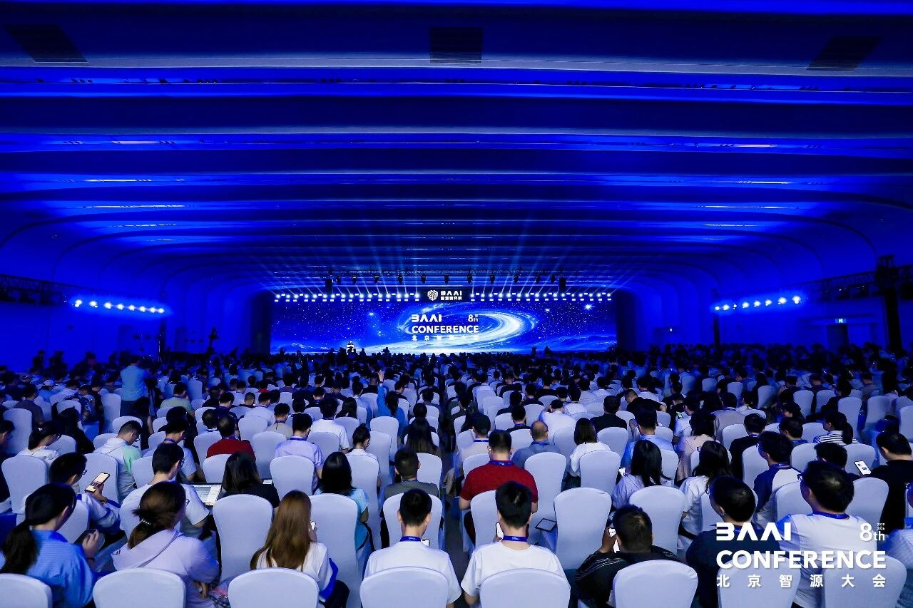
The 8th Beijing Zhiyuan Conference opened June 12, 2026 at the Zhongguancun International Innovation Center.
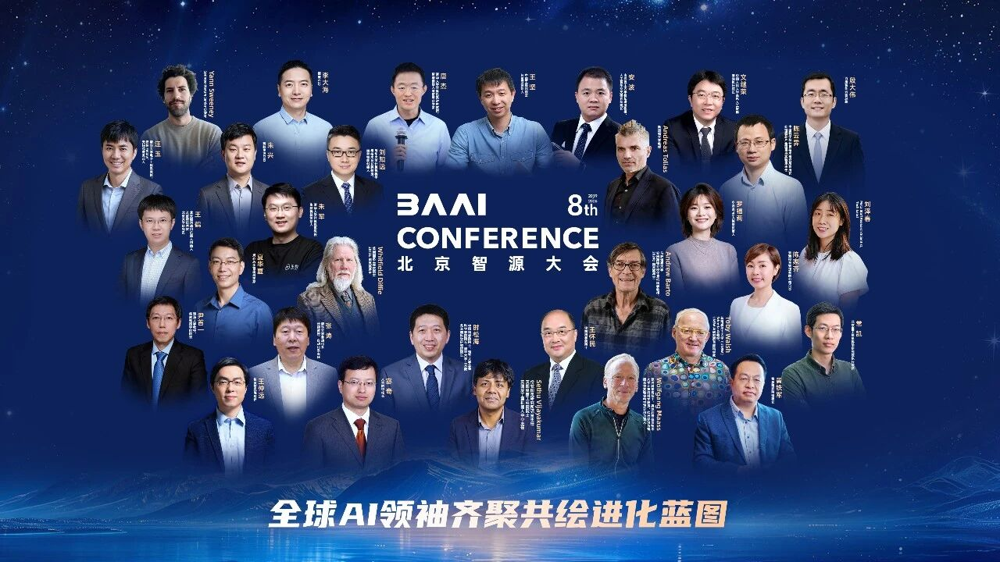
Billed as an "AI insider academic summit" hosted by BAAI — emphasizing technological frontiers, global vision, and young researchers — the conference convenes domestic and international scholars for knowledge exchange and practical discourse. Whitfield Diffie, architect of modern digital security, appeared in person to address Agent-era security and trust. Reinforcement learning pioneer Andrew Barto probed the implications of interaction-driven intelligence for next-generation AI. Over 30 scientists under 30, 40-plus AI executives and chief scientists, and 200 leading academics assembled in Beijing, marking the first joint appearance of China's most representative world-model and Agent innovators. More than 20 top global firms and research bodies — Meta, NVIDIA, Harvard, MIT among them — shared the forum with Alibaba, Tencent, Xiaomi, Shengshu Technology, Face Intelligence, Tsinghua, Peking University, and Renmin University. Hundreds of additional AI academics contributed keynote speeches and forward-looking panels on world models, universal agents, embodied intelligence, AI safety, AI-native education, token economics and OPC, and intelligent computing architectures.
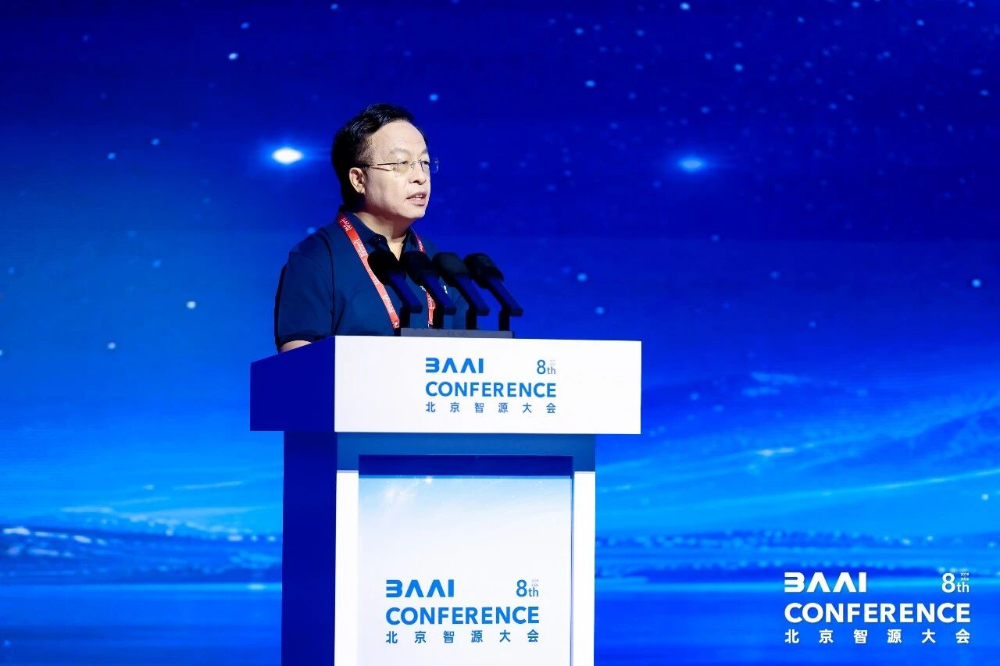
BAAI Chairman Huang Tiejun presided over the opening ceremony.
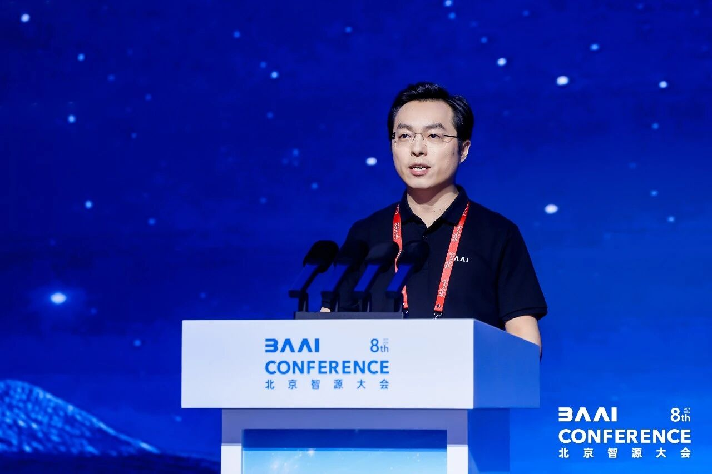
BAAI President Wang Zhongyuan presented the 2026 research progress report, unveiling the institute's latest advances in foundational large models, agents, and basic software-hardware ecosystems, alongside open-source ecosystem milestones.
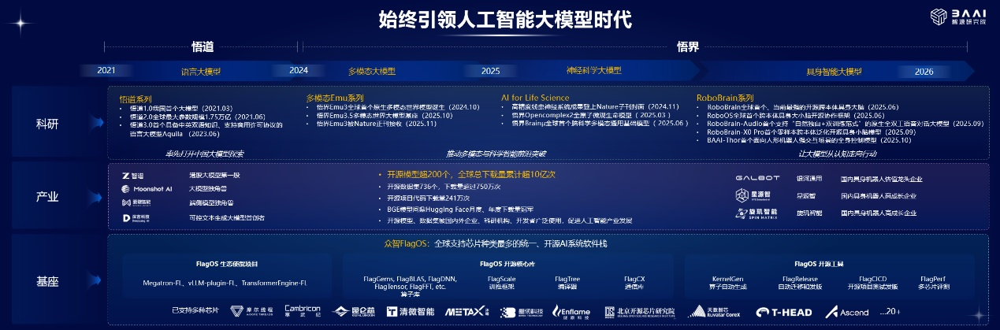
Since its 2018 founding, BAAI has released the "WuDao" and "WuJie" large-model families, constructing a bottom-up, full-stack open-source architecture. From the early large-model era through the emergence of physical AI, BAAI has sustained its leadership in frontier AI research. To date, the institute has open-sourced more than 200 models, surpassing 1 billion cumulative global downloads, and has incubated a number of representative startups in large-model and embodied-intelligence domains.
At its 2024 conference, BAAI published its forecast for AI's evolutionary trajectory — specifically large-model technologies. AI is now accelerating its migration from the digital to the physical realm, progressing from large language models through multimodal models toward world models. Over the past year, BAAI has logged notable research advances across foundational large models, agents, and basic software-hardware ecosystems. Drawing on its work in multimodal and world models, BAAI has systematically mapped the world-model landscape, proposed a four-category taxonomy of existing approaches, and unveiled its in-development WuJie-Physis.
Foundational Large Models
The "WuJie" series, unveiled at the 2024 Zhiyuan Conference, is designed to equip AI with the capabilities necessary to bridge the digital and physical worlds and to establish a physical-world AI foundation model. WuJie-Emu3.5, officially released in October 2025, relies exclusively on Next-Token Prediction to achieve unified learning across text, images, and video — along with integrated multimodal understanding and generation. This original work was published in Nature this January, setting multiple records for domestically developed multimodal large models.
This year's conference also introduced a slate of breakthroughs. WuJie-Brainμ1.0 — the world's first multimodal neuroscience large model to unify understanding and generation — extends Next-Token Prediction into neuroscience, constructing a general-purpose multimodal brain-science foundation. Collaborative research by BAAI and Tsinghua University based on this model has been published in Science. Concurrently, BAAI released the world's largest and most comprehensive AI-Ready neuroscience dataset and the BrainToken platform. WuJie-OpenComplex2.5, a generalizable and physically realistic AI-driven drug discovery model, precisely resolves flexible IDP conformations and systematically empowers the entire drug-development pipeline under a single architecture. WuJie-Physis-v0.1, the world's first general world foundation model, unifies physical-state learning to deliver physical correctness, traceable causal action, long-range consistency, and cross-domain generalization for full vertical application.
Agents
To address embodied intelligence's four core challenges — immature hardware, data shortages, weak models, and difficult deployment — BAAI has constructed a bottom-up, full-stack embodied intelligence technology stack, releasing WuJie-RoboBrain and WuJie-RoboOS. Its in-development WuJie-RoboBrain Orca builds an embodied brain around next-physical-state prediction, incorporating large volumes of egocentric interaction data to enhance world-model embodied representation and improve few-shot and cross-scenario generalization. Drawing on its institutional research profile and project portfolio, BAAI has also introduced four proprietary agents for cardiac diagnosis assistance, scientific discovery, personal assistants, and biosafety protection.
Basic Software and Hardware Ecosystem
BAAI and the open-source community co-developed Zhongzhi FlagOS, transforming the "M models × N chips" adaptation challenge into a unified multi-model, multi-chip access solution. FlagOS 2.1 supports 32 chip models across 18 manufacturers — the broadest chip coverage of any computing-system software stack worldwide. Its operator library has surpassed 600 entries and continues to expand rapidly. The stack also offers a unified compiler for 18 chip makers and a unified communication library for 12. FlagOS now counts over 80 ecosystem members, with more than 375,000 global downloads reaching 56,000 developers.
WuJie Series: AI Foundation Models for the Physical World
As multimodal research advances, AI is undergoing a paradigm shift from "predicting the next token" to "predicting the next physical state" — the very essence of world models.
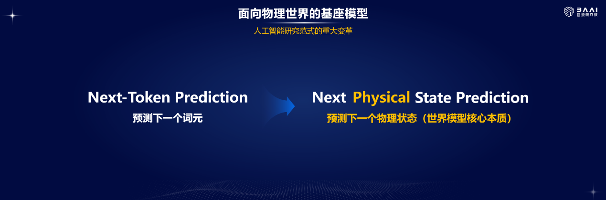
BAAI was the first Chinese research body to propose and pursue world-model research. At the 2023 Zhiyuan Conference, Yann LeCun articulated the next-generation world-model concept. By 2024, BAAI's AI large-model roadmap had explicitly anointed world models as the next frontier. WuJie-Emu3 (2024) and WuJie-Emu3.5 (2025) stand as the world's first native multimodal world models. Drawing on sustained technical depth and forward positioning, BAAI launched WuJie-Physis-v0.1 in 2026 — a product of its development-path assessment and the lineage from "WuDao" to "WuJie." As language and multimodal technologies mature, AI's developmental focus will migrate into the world-model era.
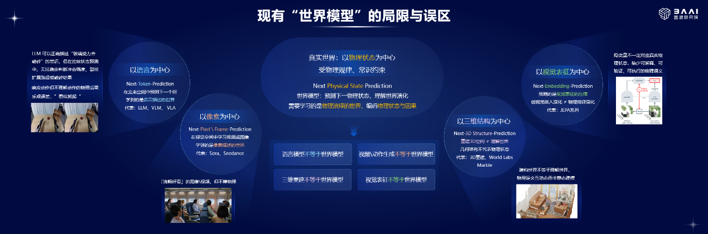
BAAI categorizes existing world-model approaches into four types. First, language-centric models (VLM, VLA) predict the next token in text space, learning a language-described world without grasping physical consequences. Second, pixel-centric models — Sora, Seedance, and similar video generators — learn in visual space but only capture pixel-described worlds. Third, 3D structure-centric models (3D reconstruction, Fei-Fei Li's World Labs Marble) reconstruct spatial geometry, yet 3D reconstruction is not world understanding, and geometry does not equate to physical state. Fourth, visual representation-centric models (LeCun's JEPA series) predict compressed visual embeddings, but embedding evolution is not physical-law evolution.
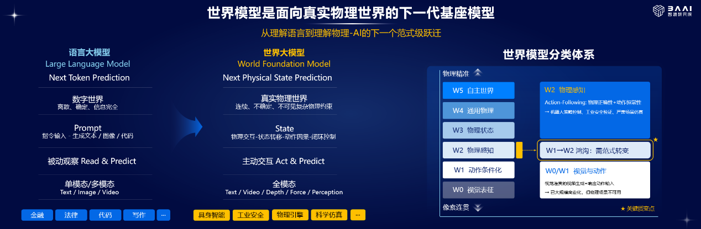
For BAAI, the world model — a next-generation foundation model for the physical world — is defined by its core mission of predicting the next physical state, marking AI's next paradigm shift. Such models perceive, understand, and reason about temporal and spatial dynamics, physical laws, and commonsense knowledge of the real world, while spanning full-modality data (text, video, depth, force feedback, perception) and enabling active interaction to support downstream physical-world applications.
1 BAAI's "WuJie" Foundational Large Models
Accelerating Digital-Physical Convergence
WuJie-Emu
WuJie-Emu marks BAAI's milestone transition from "WuDao" to "WuJie." Emu3 was published in Nature in January 2026 — the first large-model result led by a Chinese research body to appear in that journal. Emu3.5 then delivered a critical upgrade, extending next-token prediction to next-state prediction across visual and linguistic sequences. Built on a pure autoregressive framework, it natively unifies understanding and generation of text, images, and video, dismantling traditional modality silos and architectural fragmentation. With built-in spatiotemporal, causal, and physical-law modeling, it resolves the industry's persistent issue of generated content defying real-world physics while bridging the technical gap for AI's transition from the digital to the physical domain — combining top-tier academic significance with foundational industrial value.
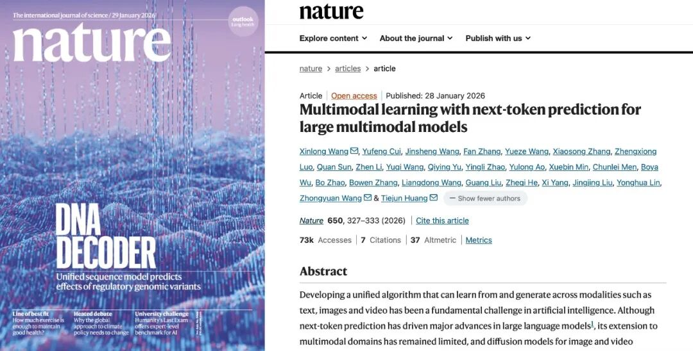
WuJie-Brainμ
WuJie-Brainμ1.0 — the world's first multimodal neuroscience large model to unify understanding and generation — extends world-model principles into brain science, constructing a general-purpose multimodal foundation. It encodes cross-species brain signals (human, macaque, mouse) from EEG, fMRI, MEG, fNIRS, Neuropixels, and calcium imaging into standardized tokens, normalizing data formats. Through multimodal alignment, these tokens are mapped to language, image, and video modalities and embedded into a pretrained large model, unlocking its full knowledge-representation and generalization capacity.
The world's largest AI-Ready neuroscience data platform, WuJie-BrainToken, aggregates global open-source neuroscience data and has completed full tokenization exceeding one trillion tokens. Brainμ1.0 leverages this tokenization to resolve data-silo challenges (complex, sparse, misaligned data) in neuroscience, lowering diagnostic costs for neurological disorders and aiding screening for Alzheimer's, depression, Parkinson's, and other conditions. WuJie-Brainμ is already assisting scientists with data analysis, underpinning research on memory-sleep regulatory mechanisms published in Science.
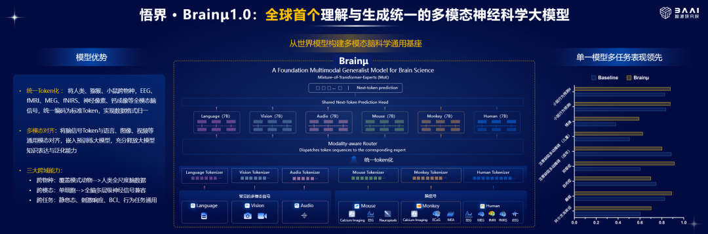
WuJie-OpenComplex
WuJie-OpenComplex2.5 is a next-generation AI-driven drug-discovery model purpose-built to resolve the dynamic conformations of intrinsically disordered proteins (IDPs). Through generalizable, physically realistic end-to-end full-atom distribution modeling, it precisely captures IDPs' flexible, shifting conformational states, surmounting the limitations of static structure analysis in highly dynamic target research and opening new avenues for challenging targets such as neurodegenerative diseases.
The model unifies four critical drug-development steps under one architecture. In pocket identification, it detects druggable pockets in target proteins with high quality and robustness across diverse targets, improving hit-discovery efficiency. In reverse screening, it identifies potential targets for a given compound via large-scale library search, enabling precise target ranking, accelerated repurposing, and off-target assessment. In structure prediction, it predicts protein-ligand 3D structures with high precision, capturing key interactions for reliable downstream use. In affinity prediction, it estimates relative trends in binding-affinity metrics, generalizing across chemical spaces and target types to support lead-compound screening and optimization.
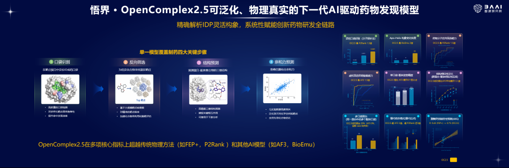
WuJie-Physis
WuJie-Physis-v0.1 — the world's first general world foundation model — builds the core engine for real-world physical AI and rearchitects the foundational system for AI physical perception and reasoning. It breaks through the traditional constraint of vertical-scenario specialization, directly addressing common industry pain points. By compensating for mainstream AI's core deficiencies — ignorance of real physical rules, low physical-reasoning credibility, and absent long-range temporal memory — it achieves unified physical interaction, perception, and decision-making across scenarios, fundamentally elevating the authenticity and reliability of AI physical reasoning.
Backed by a proprietary architecture that creates significant competitive barriers, WuJie-Physis-v0.1 replaces pixel- and frame-level prediction with physical latent-space representation, enabling cross-scenario general physical-law reinforcement learning. A dedicated physical-state encoder compresses video, depth RGB, 3D point clouds, force-tactile feedback, and other full-modality data into standardized latent physical states. The model supports long-range reasoning across more than 50 complex physical scenarios, delivering four core capabilities: physical consistency, action causality, long-range predictability, and cross-domain generalization. Combining efficient inference with strong generalization, it has achieved industry-leading performance suitable for serious industry, embodied intelligence, physical simulation, and scientific research.
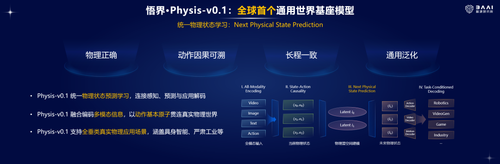
WuJie-RoboBrain Orca
WuJie-RoboBrain Orca is an embodied brain built around next-physical-state prediction, creating a closed-loop pipeline of unified representation, modeling, prediction, and interaction. It advances from Next Token/Frame/Action Prediction to Next Physical State Prediction, shattering traditional AI's text-only limitation and pushing AI from text comprehension into physical-world perception, prediction, and interaction. With extensive egocentric interaction data integrated, it strengthens world-model embodied representation and enhances few-shot and cross-scenario generalization.
WuJie-RoboBrain Orca delivers three core capabilities — unified representation, causal reasoning, and modality decoding — simultaneously generating linguistic reasoning, visual predictions, and action decisions in a "think, see, act" trinity. This endows embodied robots with a complete cognition-prediction-action chain, enabling sustained autonomous operation in real-world settings such as logistics and hospitality.
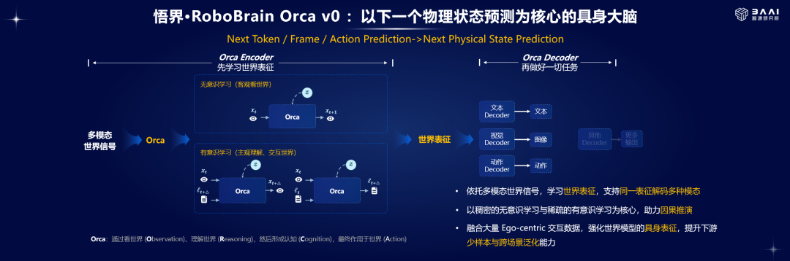
2 Agents in Full Swing
BAAI's Multi-Layered Agent Portfolio and Milestones
From 2024, the Zhiyuan Conference has been an early adopter of the agent paradigm, dissecting the new system architectures arising from LLM-agent convergence. In 2025, it advanced to "autonomous agents," pushing agents from model applications toward intelligent systems. By 2026, the conference's focus escalated to how AI engages with real-world environments — stably, continuously, and safely — and integrates into workflows and social systems. Drawing on deep technical foundations, BAAI has built a multi-layered agent portfolio spanning cardiac diagnosis assistance, scientific discovery, personal assistants, and biosafety protection.
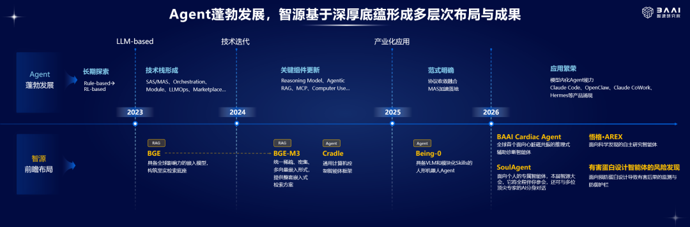
BAAI Cardiac Agent
BAAI Cardiac Agent — the world's first diagnostic-assistance agent for cardiac MRI — draws on more than 30,000 image-text paired multimodal records from over 2,000 cardiovascular patients at Anzhen Hospital to deliver a one-stop pipeline encompassing structure segmentation, functional assessment, disease diagnosis, and intelligent reporting. It both accelerates CMR interpretation and encodes Anzhen cardiologists' clinical expertise. Its Agent-Expert system replicates specialist-team collaborative workflows, achieving diagnostic accuracy on par with Anzhen's leading cardiovascular physicians (AUC > 0.93).
AREX
AREX is an autonomous research agent for scientific discovery, designed to push AI from imitation learning to self-directed learning. Targeting pain points across the research lifecycle — scarce innovative ideas, slow design-implementation cycles, and cumbersome experimental validation — it reduces reliance on human intervention across the full workflow, augmenting human research and enabling autonomous discovery. AREX can serve literature review, ideation, experiment design, result validation, and paper writing, as well as rapid construction, self-optimization, and iteration of AI service pipelines, further powering autonomous exploration and scientific discovery in foundational frontier disciplines.
SoulAgent
SoulAgent is a personal AI agent built on a proprietary architecture, delivering 30% token-cost savings and 80% resource reduction. Through self-evolution driven by user profiles and learned skills, it matures into a dedicated digital expert that provides personalized service, long-term memory, and high-privacy security — addressing the core deficiencies of general-purpose AI assistants: poor habit recognition, slow adaptation, inadequate data protection, and inability to sustain deep collaboration. At the Zhiyuan Conference, SoulAgent enabled attendees to monitor sessions in real time, capture key insights, extract expert viewpoints, and maintain an intelligent "presence" across concurrent tracks.
Risk Discovery Agent for Harmful Protein Acquisition
BAAI introduced a risk-discovery agent for harmful-protein acquisition, for the first time closing the loop between computer simulation and real-world wet-lab validation. It demonstrated that advanced AI agents can bypass biosafety screening by decomposing target harmful-protein sequences into DNA fragments and reassembling them to recover the harmful gene sequence. Where traditional AI biosafety assessments rely on passive post-incident responses with irreproducible attack paths, this system proactively simulates adversarial behavior to identify agent vulnerabilities in biological knowledge retrieval and harmful-protein design — shifting risk management from remediation to rehearsal.
3 FlagOS 2.1: A Comprehensive Upgrade
Building a Universal, Efficient, Intelligent Computing Backbone
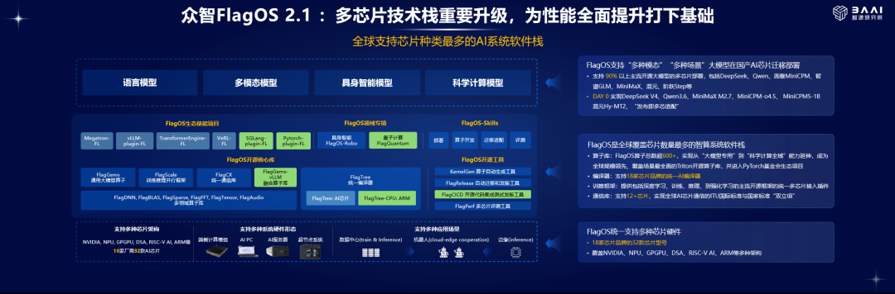
Zhongzhi FlagOS — a unified intelligent-computing software stack spearheaded by BAAI — is purpose-built to resolve the "multi-model × multi-chip" adaptation bottleneck. Supporting the broadest chip portfolio of any intelligent-computing stack worldwide, FlagOS unifies 32 chip models from 18 brands across NVIDIA, NPU, GPGPU, DSA, RISC-V AI, and ARM architectures, enabling cross-modality, cross-scenario large-model deployment on diverse AI chips. Through its general operator library, unified AI compiler, automatic operator generation tools, and vLLM multi-chip plugin, FlagOS supports multi-chip deployment for over 90% of mainstream open-source large models — including DeepSeek, Qwen, MiniCPM, GLM, MiniMaX, Hunyuan, and Step. Multi-chip compatibility is achieved at day-zero release, with DeepSeek V4, Qwen3.6, MiniMaX M2.7, MiniCPM-o4.5, MiniCPM5-1B, and Hunyuan Hy-MT2 among those immediately adapted.
As the intelligent-computing stack with the world's broadest chip coverage, FlagOS has built a full technical architecture from low-level operators to upper-level framework integration. On end-to-end performance optimization, it extends Triton-TLE language support to Huawei Ascend, Haiguang, Moore Threads, Tsingwei Intelligence, and NVIDIA chips, pushing key operator performance to the limit. Eight operator libraries with over 600 total entries span "large-model-specific" to "scientific-computing" capabilities, and core components have entered the PyTorch Foundation ecosystem. The FlagCX communication library unifies 10 chips and has achieved dual recognition — ITU international standards and national standards — for global AI chip communication.
FlagRelease introduced an Express "high-speed" mirror image for one-click installation and end-to-end rapid inference. FlagCICD — the first AI multi-chip open-source integrated testing and release platform — was launched. On the frontier, FlagQuantum, a high-performance quantum-circuit simulation framework, marks the first step toward quantum-computing convergence by enabling machine learning across AI chips and quantum circuits.
4 Turing Laureates and Chinese AI Leaders
On the Future of AI
Turing Award laureates Whitfield Diffie (US National Academy of Engineering, IEEE Fellow) and Andrew Barto (Professor Emeritus, UMass Amherst) each delivered keynote addresses at the 2026 Beijing Zhiyuan Conference opening ceremony.
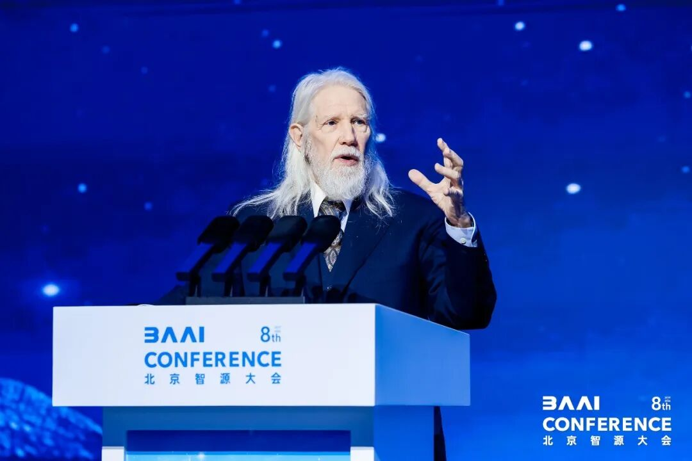
Whitfield Diffie spoke on "Security For AI Agents, Security Against AI Agents." He described today's cybernetic (feedback) approach as post-hoc failure repair, arguing that the future lies in formal methods that dramatically improve program reliability. Diffie contrasted cryptographic systems — small enough for thorough verification — with typical programs (compilers, operating systems, applications, agents), which far exceed human verification capacity, a gap he expects AI to fill. He stressed that agent confinement — restricting agents to authorized resources — remains poorly addressed in current programming practice.
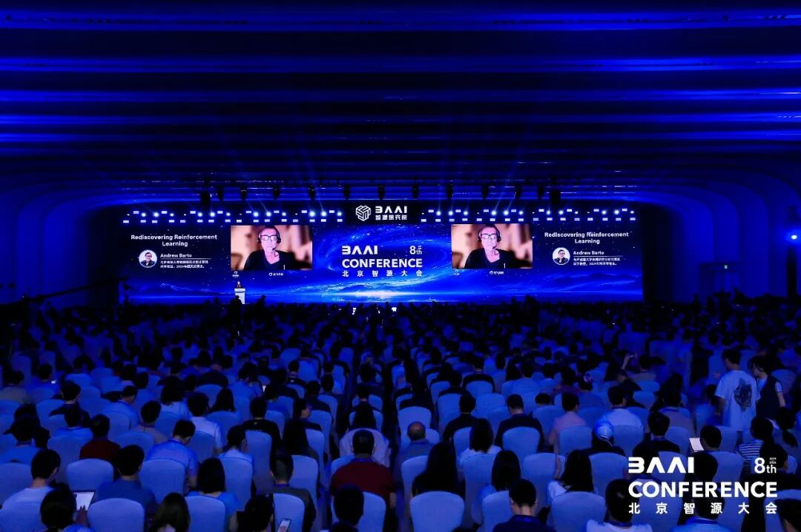
Andrew Barto spoke on "Rediscovering Reinforcement Learning," defining its essence as a trinity of control, search, and associative memory — simultaneously "learning with a critic" and "trial-and-error learning," centered on caching search results to avoid continuous search. He observed that "machine learning began as reinforcement learning" and that "synaptic plasticity embodies the law of effect." Schultz et al.'s reward-prediction-error hypothesis, he noted, demonstrates that phasic midbrain dopamine activity encodes the discrepancy between old and new expected future rewards. Barto stressed that computational RL and neural-network research have been deeply interwoven from the outset, both rooted in hypotheses about brain function and learning. He argued that connecting deep RL's computational power with advances in brain reward-system research charts the next frontier. He closed with a warning: "Be careful what you wish for — you might just get it," urging caution against perverse-instantiation risks in reward-signal design.
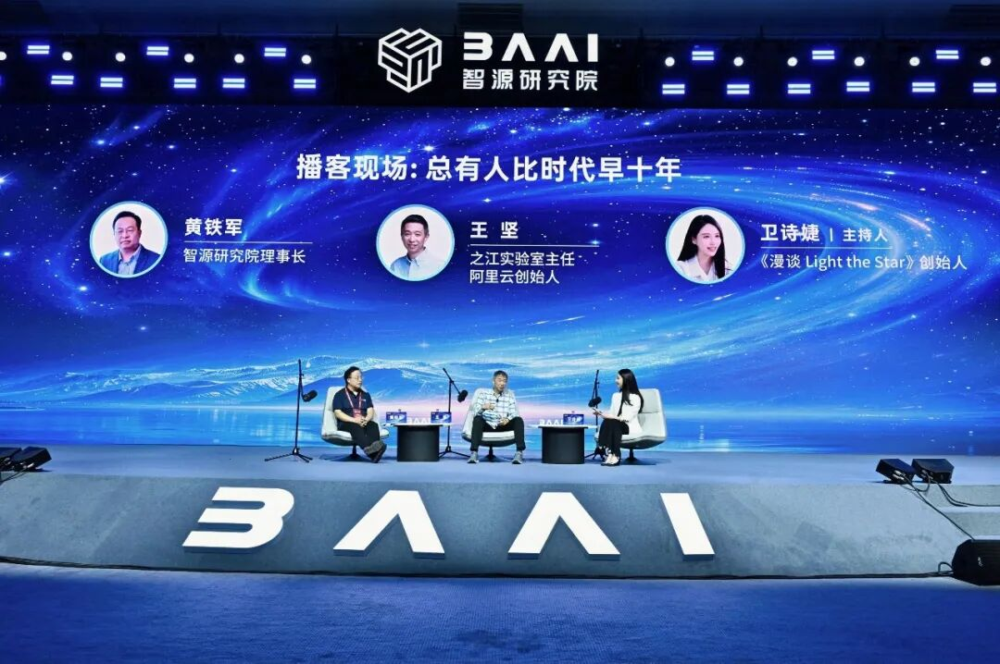
BAAI Chairman Huang Tiejun and Wang Jian — Director of Zhejiang Lab and Alibaba Cloud founder — engaged in a live podcast dialogue on "Someone Is Always Ten Years Ahead of Their Time," moderated by Wei Shijie of "Light the Star." The discussion traced China's AI paradigm arc: from catch-up validation to route selection, system-building, and paradigm creation; from the ceiling of internet text data and acute computing-power scarcity to the formation of indigenous problem awareness. It also examined the Agent-era paradigm — moving from reasoning to agents — and the direct impacts and risks of massive, high-concurrency agents on the real world. As AI evolves from object to subject, the speakers offered long-term reflections on human-AI relations and the coexistence of human and AI civilizations.
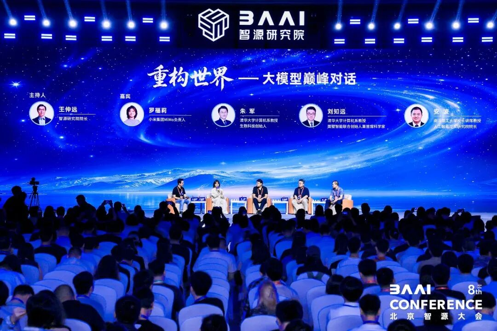
In the "Restructuring the World — China's Large Model Summit Dialogue" roundtable, BAAI President Wang Zhongyuan joined industry leaders — including Tsinghua Professor and Shengshu Technology founder Zhu Jun, Xiaomi MiMo head Luo Fuli, Tsinghua Professor and Face Intelligence co-founder Liu Zhiyuan, and NTU Presidential Chair Professor An Bo — for deep discussion on supermodel evolution, AI self-evolution, multimodality, and world models. The dialogue centered on the logic of restructuring as AI transitions from the digital to the physical realm. Panelists agreed that super models and agent systems are unlocking greater momentum; self-evolution promises to become a key driver of intelligent transformation; and the accelerating maturation of multimodality and world models can propel AI from digital space into the physical world. They also called for broader exploration opportunities for young researchers in this restructuring process.
5 BAAI AI Research Experience Zone
Inspiring Future Intelligence, Tracing Innovation's Source
At the 2026 Zhiyuan Conference, the BAAI AI Research Experience Zone — themed "Inspiring Future Intelligence, Tracing Innovation's Source" — presented cutting-edge advances across four domains: SoulAgent, embodied intelligence, Zhongzhi FlagOS, and AI for Life Science. Through hands-on demonstrations, immersive installations, and direct interactions, visitors experienced how AI is being deployed in real-world settings to serve industry and daily life.
SoulAgent — BAAI's personal agent that grows smarter with use — was showcased in a dedicated experience zone where attendees could claim an agent on-site, monitor parallel sessions across venues, and converse in real time with AI representations of leading scholars. With sustained use, SoulAgent evolves, maturing into a genuinely personalized AI companion.
The embodied-intelligence zone let visitors witness AI's physical-world interaction firsthand. In the ping-pong competition area, attendees played against a humanoid robot running the SpikePingPong system — the world's first cross-embodiment fully autonomous ping-pong platform, co-developed by BAAI and Peking University. High-frequency visual perception, ball-trajectory prediction, real-time strategy, and motion control enable the robot to see, react, and play with precision. The algorithm has been adapted to platforms including Agibot Lingxi X2, Yuanzheng A3, and Unitree G1. In the hotel-cleaning zone, visitors observed robots autonomously performing cleaning tasks through an edge-deployment solution built on the RoboBrainX embodied model, RoboClaw interaction system, and Xingyuan Intelligence N5 computing platform — executing long-range flexible-object manipulation and other complex tasks while minimizing cloud dependency.
The Zhongzhi FlagOS zone centered on "an open-source, unified intelligent-computing software stack for diverse AI chips," built around the principle of being visualizable, interactive, and portable. Through hands-on experiences — one-click stack startup, a knowledge challenge, and automatic operator generation — visitors gained an intuitive grasp of FlagOS's cross-chip, cross-scenario AI adaptation capabilities.
The AI for Life Science zone comprised three sections. The Anzhen-BAAI Cardiac AI Hospital area guided visitors through a patient's diagnostic journey — AI ECG analysis, intelligent functional screening, transparent-heart lesion mapping, BAAI Cardiac Agent, and AI-assisted surgery. The neuroscience area offered deep dives into BrainToken and WuJie-Brainμ1.0, demonstrating AI's role in fundamental research, brain-disease treatment, and next-generation brain-computer interfaces. The AI drug-discovery area featured WuJie-OpenComplex2.5, which addresses four critical drug-development steps under a single architecture, outperforming international benchmarks on key metrics.
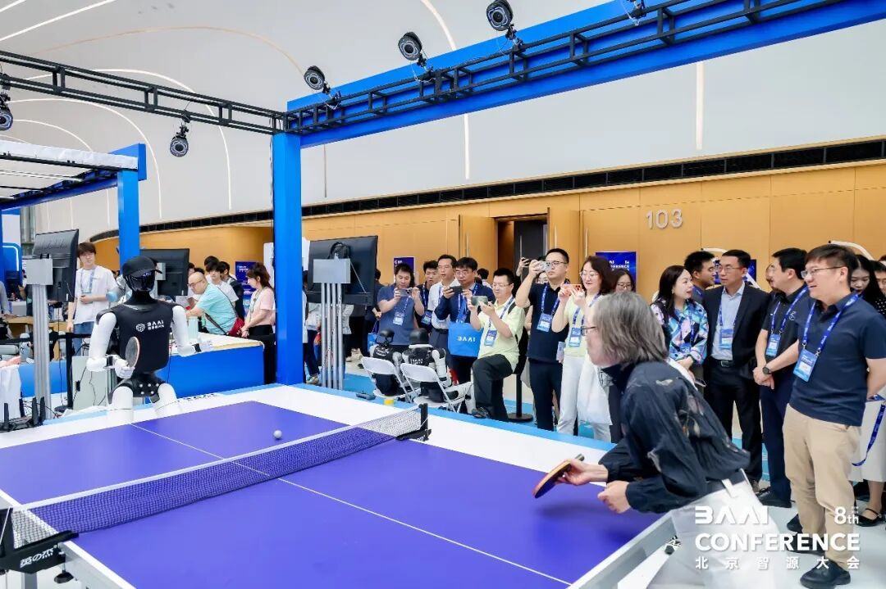
From pioneering China's large-model exploration to defining foundation models for the real physical world, BAAI has fortified the country's AI innovation base through top-tier academic breakthroughs, industrial ecosystem incubation, and full-stack open-source commitment. As the next AI paradigm shift unfolds, BAAI aims to sustain its technology leadership and forge a path toward physical AGI. [Leiphone (WeChat account: Leiphone) frontline report]